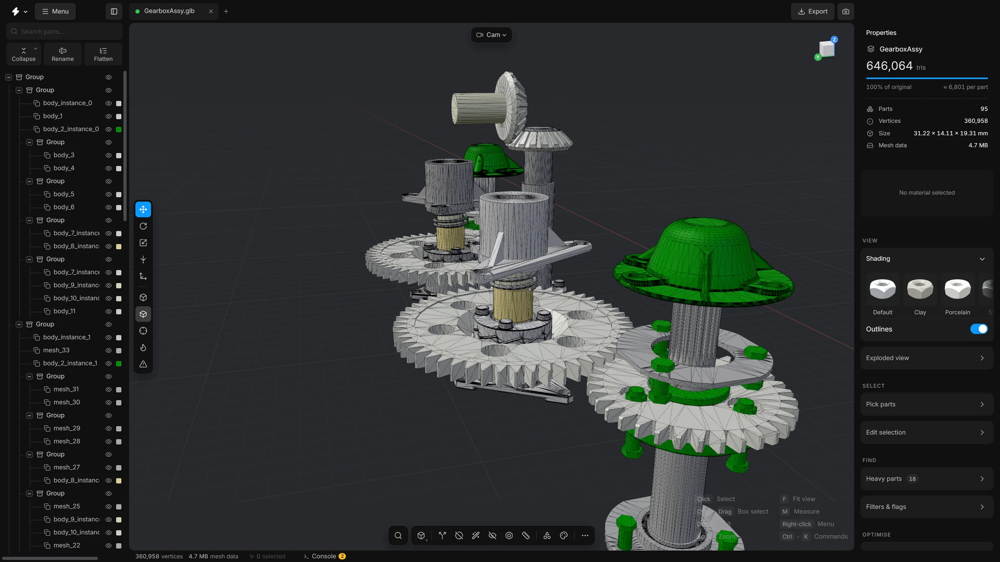
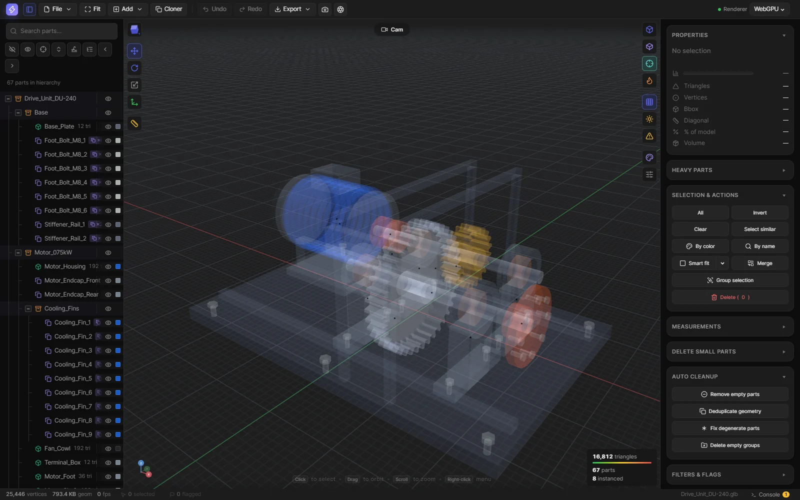
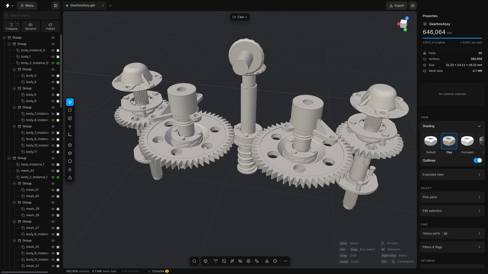

View modes
Five ways to draw the same model: solid, wireframe, X-ray, heatmap and clay. One key each, and what each is good for.
A view mode changes how the model is drawn, not the model itself. Switch with the number keys, or with the buttons on the tool strip at the left edge of the viewport.
- 1
- Solid: the normal view, with colours and lighting
- 2
- Wireframe: only the edges of the triangles
- 3
- X-ray: every part as a see-through shell
- 4
- Heatmap: parts coloured by triangle density
- 5
- Clay: every part in one plain material. Press it again to return to solid.
Solid
The everyday view. Parts have their own colours and are lit by a soft studio and a light that follows the camera, so dark parts keep an edge and a sheen.
Wireframe
Shows the triangles themselves. Use it to see how dense a mesh is, and to check what Decimate has done. Where the lines are so close that they merge into a solid patch, the mesh is very dense.


X-ray
Makes every part translucent, so you can see what is inside without hiding anything.


Heatmap
Colours each part by how many triangles it has for its size. It answers the question “where is the weight?” at a glance. See How to read the numbers.
Clay
Takes the colours away. Every part gets the same plain material, so all that is left is form: edges, curvature, and what stands in front of what. It is a good view for judging whether a simplified model still reads as the same object.
Right-click the clay button on the tool strip for other looks: porcelain, steel or red wax.


Good to know
- A view mode never reaches a file. Saving and exporting switch to solid while they run, then switch back.
- To see inside a model, use X-ray, Hide, isolate, show all or Select hidden parts.
- The background and the lighting are under Settings, Viewport and Settings, Scene.